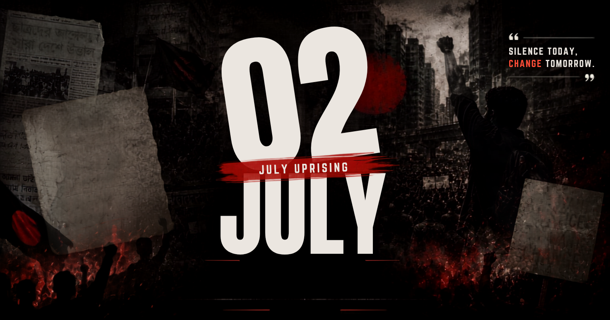

ISTIACK'S JULY CORNER
Read in Bangla

Share
Print
Select Print Language
English
বাংলা (Bangla)
Both / উভয়ই
Cancel
Link copied to clipboard!
 ISTIACK'S JULY CORNER
ISTIACK'S JULY CORNER
ISTIACK'S JULY CORNER
ISTIACK'S JULY CORNER